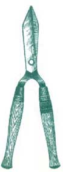

BITS & PIECES
The recent cutbacks in the fish trade have left many hard-working people without jobs. The government has enforced some drastic regulations on those in the fish business including limiting the grounds that can be fished, the days each boat can fish, and the size of catches that are permitted. Although the government's intention is to try to preserve existing fish stocks, their regulations have induced a 50% job loss among fish workers.
Neptune Harvest, a division of Ocean Crest Seafoods, Inc., of Gloucester, Massachusetts, has come up with a way of putting people back to work and something back in the environment-recycled fish.
Pondering the waste of fish parts that are left when the fillet (or the parts you and I eat) is cut from the fish gave the folks at Ocean Crest Seafoods, Inc., an idea. They decided to turn the leftover fish parts into healthy fertilizer.
While using fish parts is not an entirely new idea, they use a special cold process in turning the fish into the fertilizer that is particularly good for your garden. They take fresh fish and grind it, breaking down peptide bonds to the smallest element so the fish becomes liquefied. Salvatore Parco, vice president of Neptune Harvest, insists on using only fresh fish. "If you're going to start off with something that smells stinky, you're just not going to get good results," he says.
The fish is not cooked and heat is never used, so valuable vitamins, nutrients, and amino acids remain intact. Many fish fertilizers are solubles that come as a byproduct when cooking the fish. Often processing plants cook at temperatures ranging from 300 to 500°F and many heat-and light-sensitive nutrients are lost as a result. The people at Neptune Harvest like to think of their process as the difference between eating a cooked vegetable and a raw vegetable. Sure, a cooked vegetable can be good for you, but a raw vegetable is better. Another perk to the cold process is that it is less malodorous, making it a little easier on the sensitive noses of the fish workers.
The best part of the fertilizer is that the nitrogen is high in amino acids, which when added to the soil, slowly breaks down into basic nitrogen compounds. A slow breakdown of amino is better because fast release formulations leach quickly out of the soil and are not available for the plant.
Proof of the beneficial growing properties in this fertilizer is a whopping 914-pound pumpkin that was grown by Craig Weir of Gloucester, Massachusetts. Craig was attracted to the fertilizer because he heard it was high in nitrogen, which is great for pumpkin vines. The pumpkin broke the New England record by 196 pounds.
Neptune Harvest has been sold commercially in garden centers for the past five years. In the past year it has been sold in the retail market. You can pick up a pint for about $4.99.
-Christine Cauchon
Even if you aren't a horticulturist, the local public garden could be a great place for you to work this summer. The American Association of Botanical Gardens and Arboreta is looking for interns of all ages and backgrounds to lend a hand (past participants have included career-changers, teachers, secretaries, retirees, and artists). Over 100 gardeners are ready to give you experience in areas such as greenhouse operations, mapping and cataloging plants, and caring for the grounds of historic estates.
All of the internships are paid. With the deadlines for many applications right around the comer, hurry and write soon to the AABGA for the 1995 Internship Directory ($5.00), a booklet describing over 500 positions and the contact person for each. The AABGA is located at 786 Church Road, Wayne, PA 19087.
|
Craig Weir and his record-breaking pumpkin. |
|
 |